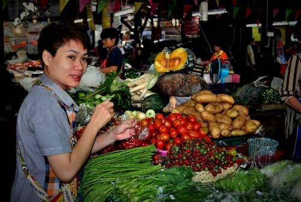
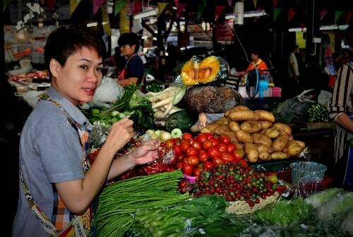

Food, Glorious Food!
Tuk Tuk Thai isn't just a food truck, it's a vessel of culture, a slice of adventure, and a journey of the senses. Each dish is crafted with the same passion that fueled Dave's travels, delivering an experience that's not just about food, but about the stories that enrich each bite. From the fiery dance of Tom Yum Goong to the comforting embrace of Pad Thai, every dish carries the legacy of Dave's journey and Nong's expertise.


 
